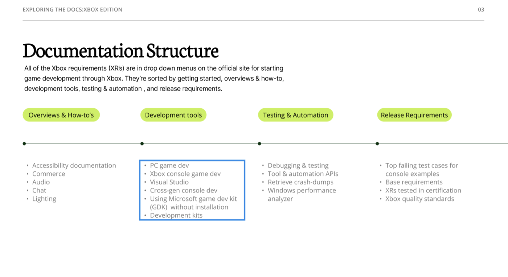

Reading a developer platform as a user experience
Documentation is an interface. I walked the Xbox developer requirements the way a first-time game developer would and reported back on where the structure helps and where it would leave someone stuck.

Why Xbox
Xbox is a console I've actually used, which made it the right platform to examine from the other side: what does it take to build something for it? The Xbox requirements — the XRs — live behind dropdown menus on the official developer site, sorted into getting started, overviews and how-tos, development tools, testing and automation, and release requirements.
What the platform asks of you
Xbox quality standards
Games have to work across game modes in a range of scenarios: title integrity, options and settings, navigation and content availability, behaviour with both low and high friend counts, multiplayer at the allowed player counts, save game compatibility, and suspend and resume.
Backward compatibility
Players can bring games forward from previous consoles, which also gives developers a path to cross-generation development.
Game Pass
A subscription covering more than a hundred games and a rotating downloadable library — for a developer, a new audience and steadier revenue.
What the documentation gets right
Navigation
The dropdown menus made topics easy to move between, and everything in the contents linked to the right page — which sounds like a low bar until you meet documentation that fails it.
Worked examples
The final upload requirements list the most common mistakes. That's a small thing that saves a developer an entire rejected submission.
Accessibility placement
Accessibility appears among the top topics in the first steps to developing a game, with its own “why make games accessible?” section — placement that treats it as a starting condition rather than a late audit.
Reflection
Ten top-level categories was few enough that I never felt overwhelmed, and the subcategories were organised in turn. Compared against Apple's iOS documentation, I had an easier time here. As a hypothetical game developer I'd know what my game needs and how to avoid the obvious issues before testing or uploading — which is the whole job of documentation, and not a given.
Project files
Opens in Figma, in a new tab.